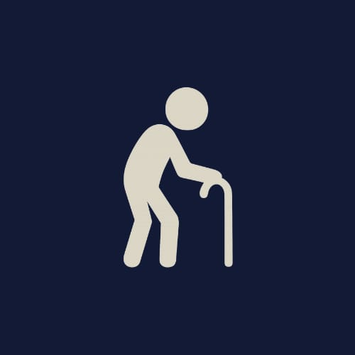
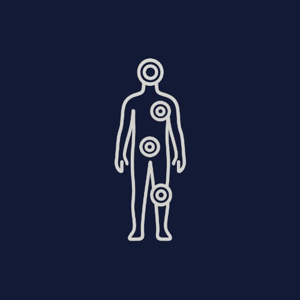
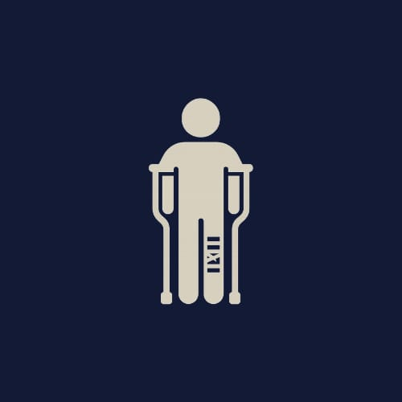
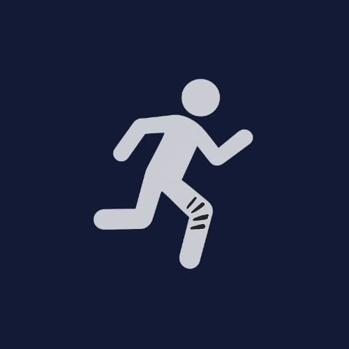
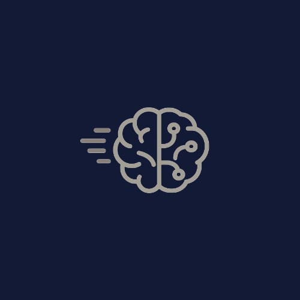
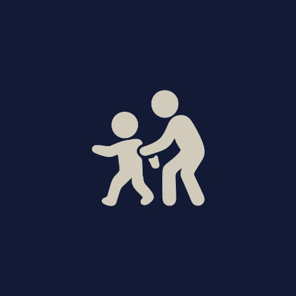
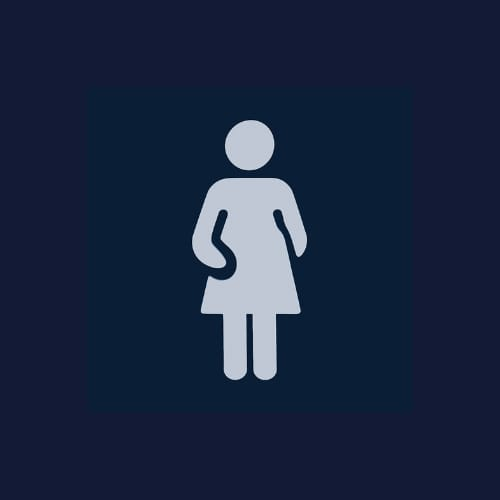
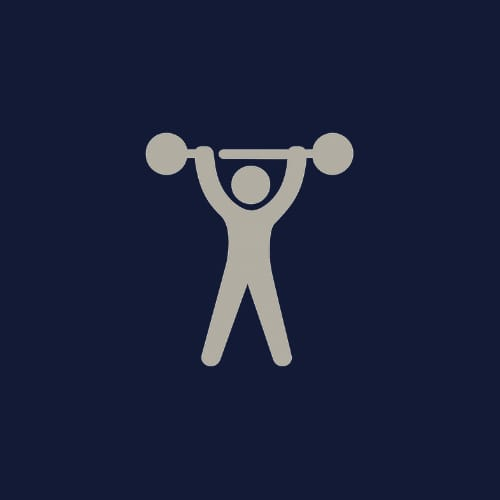
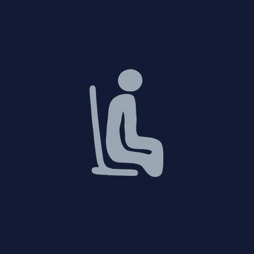

Our Expert Services Include
Geriatric Physiotherapy & Fall Prevention
Our geriatric care program is designed to help older adults maintain their independence and mobility. We focus on fall prevention, balance training, and exercises to improve strength and flexibility.
Learn moreChronic Pain Management
We use a multidisciplinary approach to manage chronic pain, including physical therapy, medication management, and lifestyle modification. Our goal is to help patients manage their pain and improve their quality of life.
Learn morePost-Surgical Rehabilitation
Our post-surgical rehabilitation program is designed to help patients recover from surgery as quickly and safely as possible. We create personalized rehabilitation plans that address the patient's specific needs and goals.
Learn moreSports Injury Recovery
We offer comprehensive treatment and rehabilitation for athletic injuries, including acute and chronic conditions. Our goal is to help athletes return to their sport quickly and safely.
Learn moreNeurological Rehabilitation
Our neurological rehabilitation program is designed to help patients with neurological conditions such as stroke, spinal cord injury, and Parkinson's disease. We focus on improving functional abilities and promoting independence.
Learn morePediatric Physiotherapy
We provide developmental and rehabilitative services for children with conditions such as cerebral palsy, developmental delay, and congenital anomalies. Our goal is to help children reach their full potential.
Learn moreWomen's Health Physiotherapy
Our women's health program addresses a range of concerns, including prenatal and postnatal care, pelvic floor dysfunction, and osteoporosis management. We provide personalized care and education to help women manage their health.
Learn moreFitness & Wellness Programs
We offer proactive programs to promote healthy lifestyles, injury prevention, and optimal physical function. Our goal is to help individuals achieve their health and wellness goals.
Learn moreErgonomic Solutions & Postural Correction
We provide workplace assessments and interventions to prevent injury, improve productivity, and enhance overall well-being. Our goal is to help individuals work safely and efficiently.
Learn moreHeadache & Migraine Management

We use a multimodal approach to manage headaches and migraines, including manual therapy, exercise, and lifestyle modification. Our goal is to help patients reduce their symptoms and improve their quality of life.
Learn more